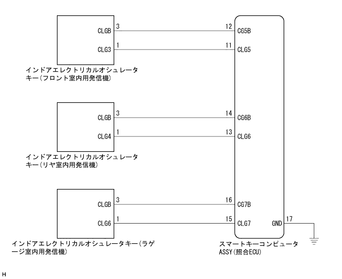
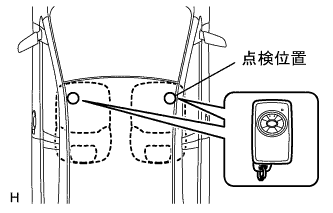
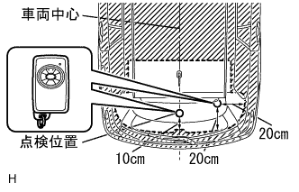
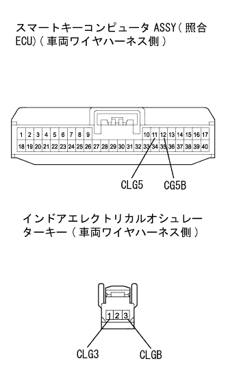
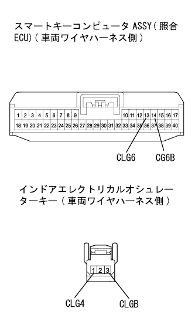
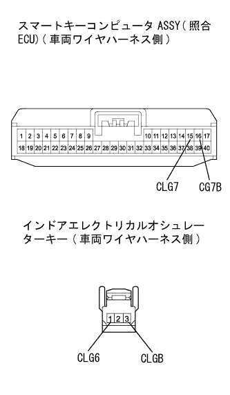

Smart Entry & Start System (Smart Entry) Interior Verification does not Occur |

| Step 1 | Read TaSCAN Data |
ECU Data Monitor
Using SST (TaSCAN), perform data monitoring of the certification ECU.
| Item Name [Symbol] | Item Description/Display Range | Standard Value | Remarks |
|---|---|---|---|
| Smart Cancel [SCAN] | Smart entry cancel status Display range: OFF-ON | OFF: Smart entry not canceled ON: Smart entry canceled | - |
| Result | Proceed to |
|---|---|
| Cancel not set | A |
| Cancel set | B |
|
| ||||
| A | |
| Step 2 | Inspect Smart Function |
Remove the transmitter battery from the electrical key transmitter.
Hold the electrical key transmitter over the engine switch and check that the meter buzzer sounds.
Check that the power can be turned to IG ON when the engine switch is operated.
| Result | Proceed to |
|---|---|
| Engine switch can be operated | A |
| Engine switch cannot be operated | B |
|
| ||||
| A | |
| Step 3 | Radio Wave Environment Check |
Install the transmitter battery to the electrical key transmitter.
Bring the electrical key transmitter close to the indoor electrical key oscillator (front interior transmitter) and check that the engine starts.
Bring the electrical key transmitter close to the indoor electrical key oscillator (rear interior transmitter) and check that the engine starts.
Bring the electrical key transmitter close to the indoor electrical key oscillator (luggage interior transmitter) and check that the engine starts.
| Result | Proceed to |
|---|---|
| Operation cannot be confirmed in either case | A |
| Operation can be confirmed | B |
|
| ||||
| A | |
| Step 4 | TaSCAN Electronic Key Diagnosis Mode |
 |
Diagnosis Mode Inspection (Front Interior Antenna)
Using SST (TaSCAN), select "Certification" → "Electronic Key Diagnosis Mode" → "Fr Interior Transmission → Interior Tuner".
Check that the wireless door lock buzzer sounds (beep, beep...) when the electrical key transmitter is placed on the driver side or front passenger side front seat cushion.
 |
Diagnosis Mode Inspection (Rear Interior Antenna)
Using SST (TaSCAN), select "Certification" → "Electronic Key Diagnosis Mode" → "Rr Interior Transmission → Interior Tuner".
Check that the wireless door lock buzzer sounds (continuous beep) when the electrical key transmitter is placed on the rear seat cushion.
 |
Diagnosis Mode Inspection (Luggage Interior Antenna)
Using SST (TaSCAN), select "Certification" → "Electronic Key Diagnosis Mode" → "Back Door Interior Transmission → Interior Tuner".
Check that the wireless door lock buzzer sounds (beep, beep...) when the electrical key transmitter is placed in the luggage compartment.
| Result | Proceed to |
|---|---|
| Any of front, rear or luggage cannot be confirmed | A |
| All of front, rear and luggage can be confirmed | B |
|
| ||||
| A | |
| Step 5 | Inspect Wire Harness and Connector (Indoor Electrical Key Oscillator - Certification ECU) |
 |
Front Interior Antenna ←→ Certification ECU
Disconnect the indoor electrical key oscillator (front interior antenna) and certification ECU connectors.
Using SST (Toyota electrical tester), measure the resistance.
| Tester connection (Oscillator - Certification ECU) | Condition | Standard |
|---|---|---|
| 1(CLG3) - 11(CLG5) | Always | Below 1 Ω |
| 3(CLGB) - 12 (CG5B) | Always | Below 1 Ω |
| Tester connection (Oscillator - Body ground) | Condition | Standard |
|---|---|---|
| 1 (CLG3) - Body ground | Always | 10 kΩ or higher |
| 3 (CLGB) - Body ground | Always | 10 kΩ or higher |
 |
Rear Interior Antenna ←→ Certification ECU
Disconnect the indoor electrical key oscillator (rear interior antenna) and certification ECU connectors.
Using SST (Toyota electrical tester), measure the resistance.
| Tester connection (Oscillator - Certification ECU) | Condition | Standard |
|---|---|---|
| 1(CLG4) - 13(CLG6) | Always | Below 1 Ω |
| 3(CLGB) - 14(CG6B) | Always | Below 1 Ω |
| Tester connection (Oscillator - Body ground) | Condition | Standard |
|---|---|---|
| 1 (CLG4) - Body ground | Always | 10 kΩ or higher |
| 3 (CLGB) - Body ground | Always | 10 kΩ or higher |
 |
Luggage Interior Antenna ←→ Certification ECU
Disconnect the indoor electrical key oscillator (luggage interior antenna) and certification ECU connectors.
Using SST (Toyota electrical tester), measure the resistance.
| Tester connection (Oscillator - Certification ECU) | Condition | Standard |
|---|---|---|
| 1(CLG6) - 15(CLG7) | Always | Below 1 Ω |
| 3(CLGB) - 16(CG7B) | Always | Below 1 Ω |
| Tester connection (Oscillator - Body ground) | Condition | Standard |
|---|---|---|
| 1 (CLG6) - Body ground | Always | 10 kΩ or higher |
| 3 (CLGB) - Body ground | Always | 10 kΩ or higher |
|
| ||||
| OK | |
| Step 6 | Inspect Indoor Electrical Key Oscillator |
Replace the indoor electrical key oscillator with a new or known good one and check that the smart function operates normally.
| Result | Proceed to |
|---|---|
| Operates normally | A |
| Does not operate normally | B |
|
| ||||
| A | ||
| ||
| Step 7 | Replace Electrical Key Transmitter |
Replace the electrical key transmitter with a new one and perform the registration procedure. (For the procedure, refer to the registration procedure in the reference section)
| NEXT | |
| Step 8 | Operation Check |
Check the door lock operation using the smart function.
|
| ||||
| OK | ||
| ||